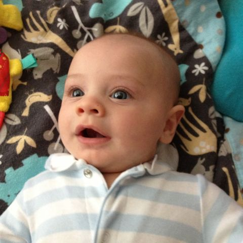
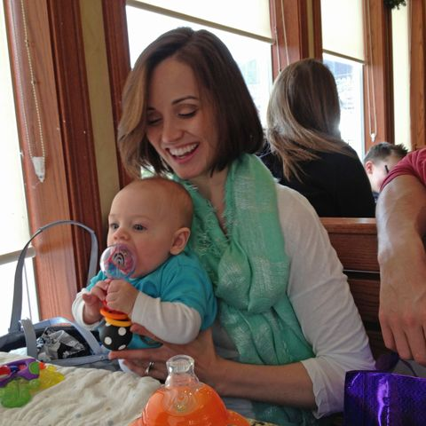

Date From:
Date To:
Tremendous efforts have been put into creating unique ways of codding, but only the most atmospheric would be able to succeed in challenging environments like the moon, mars, sun etc.
Numberous efforts have been put into creating unique ways of codding, but only the most atmospheric would be able to succeed in challenging environments like the moon, mars, sun etc.
Irevocable efforts have been put into creating unique ways of codding, but only the most atmospheric would be able to succeed in challenging environments like the moon, mars, sun etc.
Proin elit arcu, rutrum commodo, vehicula tempus, commodo a, risus. Curabitur nec arcu. Donec sollicitudin mi sit amet mauris. Nam elementum quam ullamcorper ante. Etiam aliquet massa et lorem. Mauris dapibus lacus auctor risus. Aenean tempor ullamcorper leo. Vivamus sed magna quis ligula eleifend adipiscing. Duis orci. Aliquam sodales tortor vitae ipsum. Aliquam nulla. Duis aliquam molestie erat. Ut et mauris vel pede varius sollicitudin. Sed ut dolor nec orci tincidunt interdum. Phasellus ipsum. Nunc tristique tempus lectus.
Morbi tincidunt, dui sit amet facilisis feugiat, odio metus gravida ante, ut pharetra massa metus id nunc. Duis scelerisque molestie turpis. Sed fringilla, massa eget luctus malesuada, metus eros molestie lectus, ut tempus eros massa ut dolor. Aenean aliquet fringilla sem. Suspendisse sed ligula in ligula suscipit aliquam. Praesent in eros vestibulum mi adipiscing adipiscing. Morbi facilisis. Curabitur ornare consequat nunc. Aenean vel metus. Ut posuere viverra nulla. Aliquam erat volutpat. Pellentesque convallis. Maecenas feugiat, tellus pellentesque pretium posuere, felis lorem euismod felis, eu ornare leo nisi vel felis. Mauris consectetur tortor et purus.
Mauris eleifend est et turpis. Duis id erat. Suspendisse potenti. Aliquam vulputate, pede vel vehicula accumsan, mi neque rutrum erat, eu congue orci lorem eget lorem. Vestibulum non ante. Class aptent taciti sociosqu ad litora torquent per conubia nostra, per inceptos himenaeos. Fusce sodales. Quisque eu urna vel enim commodo pellentesque. Praesent eu risus hendrerit ligula tempus pretium. Curabitur lorem enim, pretium nec, feugiat nec, luctus a, lacus.
Duis cursus. Maecenas ligula eros, blandit nec, pharetra at, semper at, magna. Nullam ac lacus. Nulla facilisi. Praesent viverra justo vitae neque. Praesent blandit adipiscing velit. Suspendisse potenti. Donec mattis, pede vel pharetra blandit, magna ligula faucibus eros, id euismod lacus dolor eget odio. Nam scelerisque. Donec non libero sed nulla mattis commodo. Ut sagittis. Donec nisi lectus, feugiat porttitor, tempor ac, tempor vitae, pede. Aenean vehicula velit eu tellus interdum rutrum. Maecenas commodo. Pellentesque nec elit. Fusce in lacus. Vivamus a libero vitae lectus hendrerit hendrerit.
The dialog box is intended for testing purposes. Please look through the web page to find other functions and selections for jQuery !